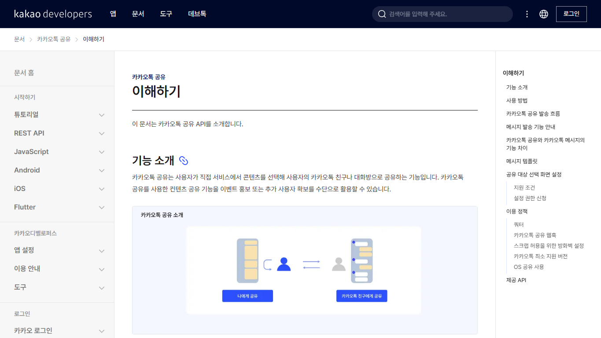
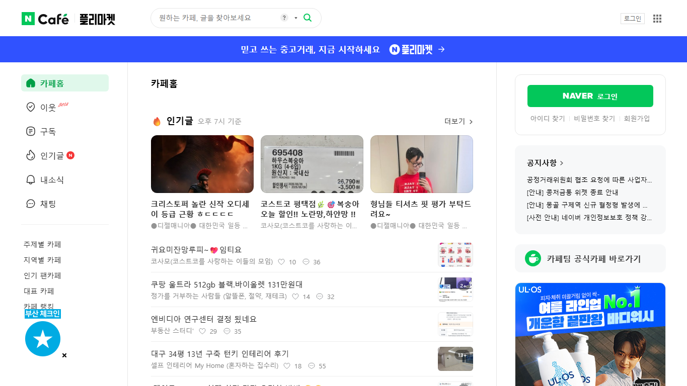
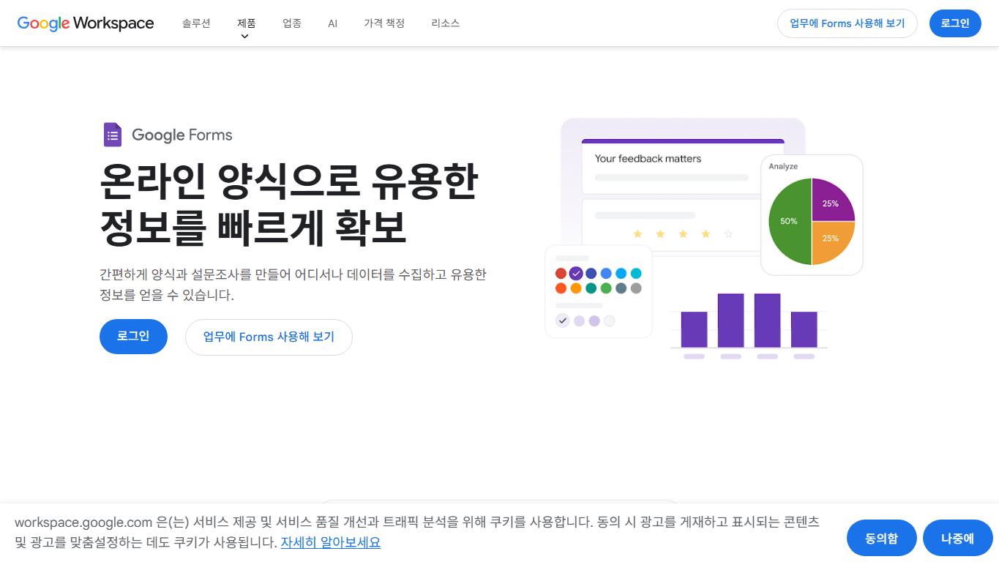
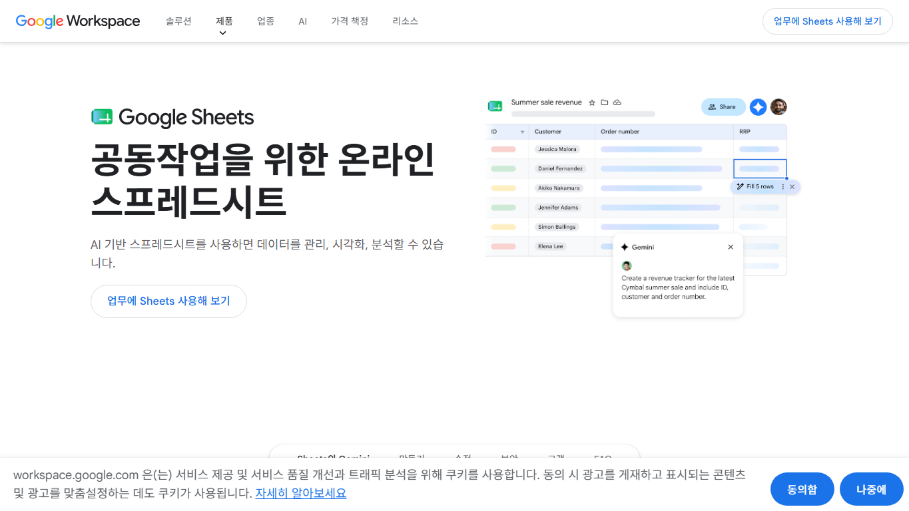
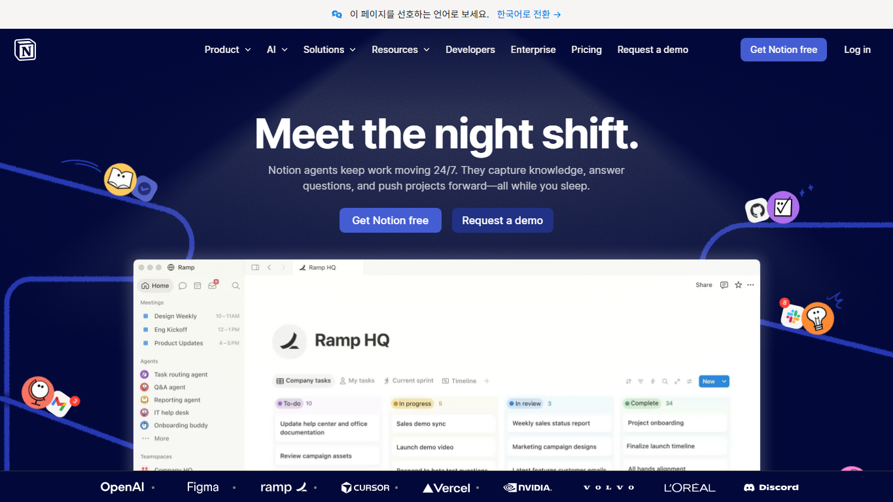
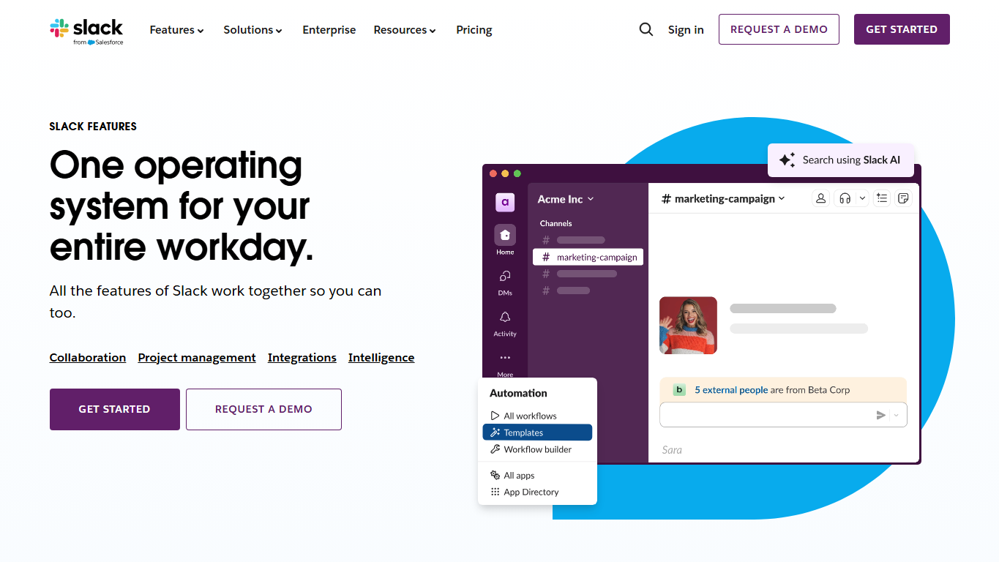

CEO brief
5단계 분석 로드맵, 대표 플랫폼 역할, 연동 보류 판단을 한 화면에서 확인합니다.
외부 생태계 분석 로드맵 근거 지도
이 문서는 FlowMe가 외부 앱, 서비스, 플랫폼, 경쟁서비스를 어떤 순서와 기준으로 판단하는지 보여주는 근거 지도입니다. 긴 연결 문서 허브는 실무용으로 남겨두고, 임원 보고에서는 분석 단계, 비교 기준, 연동 보류 조건만 먼저 봅니다.
회의에서는 실험 상태가 아니라 분석 기준과 연동 금지선을 먼저 확인합니다.
5단계 분석 로드맵, 대표 플랫폼 역할, 연동 보류 판단을 한 화면에서 확인합니다.
외부 앱을 콘텐츠 소스, 목적지, 경쟁/인접 서비스, API 준비도, 후보 압축 순서로 봅니다.
분석방의 주요 근거문서가 한국어 HTML로 확보되어 있는지 확인합니다.
임원 질문을 기준으로 열어볼 문서를 고정했습니다.
OAuth, 자동 게시, 응답 가져오기, 토큰 저장은 기본 개발 범위가 아니라 별도 조건을 통과해야 합니다.
후보 우선순위와 만들 것, 보류할 것, 금지할 것을 한 표로 확인합니다.
분석방의 현재 축, 문서 순서, 보류 조건을 확인합니다. 실험 운영 문서는 여기서 파생됩니다.
근거문서와 실제 검증 증거를 섞지 않기 위한 운영 기준입니다.
보고서의 숫자와 결론은 아래 순서의 문서에서만 끌어옵니다.
분석방 인덱스, 로드맵, API readiness로 제품 경계를 고정합니다.
HTML 커버리지 감사와 연결 문서 허브로 문서 접근성을 확인합니다.
Phase 5 압축표와 단계 체크포인트로 만들 것과 보류할 것을 구분합니다.
문서화 중단 기준과 결과 요약 후 판단 기준으로 다음 개발 여부를 제한합니다.
앱 이름만 나열하지 않고, 비교 기준으로 본 실제 공개 화면을 함께 보관했습니다.

공유 목적지로 검토. 친구·그룹 타기팅 자동화는 현재 분석 범위 밖입니다.

커뮤니티 배포 채널로 검토. 자동 게시와 댓글 수집은 금지선에 둡니다.

응답 수집 UX 비교 대상. 자동 생성·응답 import는 관찰 이후 판단합니다.

시트 목적지 비교 대상. 초기는 복사·CSV export 수준으로 제한합니다.

메모·문서 목적지 비교 대상. workspace sync는 Stage 1 이후 후보입니다.

팀 공유 채널 비교 대상. webhook·bot 설치는 readiness gate를 통과해야 합니다.
아래 문서는 로드맵 설명에는 필요하지 않습니다. 실제 운영 단계가 열릴 때만 봅니다.
관찰 대상이 같은 preview인지 확인할 때만 사용합니다.
agreed 슬롯의 실제 관찰 중에만 채웁니다. 빈 worksheet는 증거가 아닙니다.
실제 관찰 결과가 채워진 뒤에만 결론 정리에 사용합니다.
문서 커버리지는 읽기 가능성 증거이고, 사용자 행동 검증 증거가 아닙니다.
이 보고서는 외부 생태계 분석 기준과 보류 조건을 정하는 문서입니다.
완료된 관찰과 채워진 결과 요약표만 판단 근거로 올립니다.
이 부록은 의사결정용 문서 지도입니다. 시장조사 최신성 검증, 실제 사용자 검증 완료, 공개 경로 승인, 연동 착수 증거를 의미하지 않습니다.